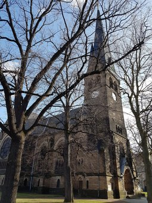
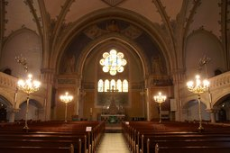
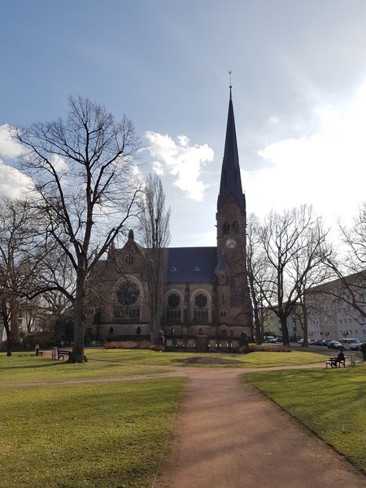

Rathaus Leuben
Das Rathaus Leuben wurde nach den Plänen der Architekten Gustav Hänichen und Otto Beeger
errichtet.
1898 erwarb die Gemeinde das für den Bau notwendige Grundstück und erteilte 1899 den Auftrag.
Das Rathaus wurde unter Verwendung verschiedener historischer Elemente mit Anklängen an den Jugendstil
entworfen
und am 28. Februar 1901 eingeweiht.
Im Erdgeschoss befand sich der schön gestaltete Ratskeller mit Brasserie und Restaurant, zugänglich durch
einen
Seiteneingang.
Auch die Verwaltung der S-Bahn Leuben-Niedersedlitz wurde in diesem historisch wertvollen Gebäude untergebracht.
Kirche Leuben
Die erste Erwähnung der "Kirchfahrt Leuben" findet man in einem Diözesanregister des damaligen Bischofs von
Meißen, es umfasste die ehemaligen Dörfer Leuben und Sedlitz.
Am 10. August 1674 wurden die zuvor zur Dresdner Frauenkirche gehörenden Dörfer Laubegast, Seidnitz und
Tolkewitz dem Kirchspiel Leuben zugeordnet.
Nach ihrer Eingemeindung im Jahre 1921 war die Kirchengemeinde Mariä Himmelfahrt die größte Kirchengemeinde in
Dresden bis zum zweiten Weltkrieg.
Vor der 1512 erbauten Kirche, dem sogenannten „Alten Turm“, steht heute die neu errichtete Himmelfahrtskirche.
Der Beschluss zur Errichtung wurde vom Kirchenrat am 2. Februar 1897 gefasst und der erste Spatenstich fand
am 15. März 1899 statt.
Die feierliche Grundsteinlegung fand am 8. Mai 1899 statt. Die erste Predigt wurde von Pastor Hünersdorf gehalten.


